Bu rapor, ders projesinde (KT1) kurulan üç durumlu doğrusal kol modelinden başlayan çalışmanın tamamını anlatıyor. Kol modeline dişli boşluğu ve yerçekimi eklendi; önce boşluk kaynaklı salınımın sınırı öngörüldü (ilk çerçeve). 5 Kasım'da ağırlık analizden tasarıma kaydı: konum döngüsü motor tarafına alındı, kalıcı hata açıya göre bir ofset tablosuyla giderildi ve geriye tek açık nokta kaldı. Kol dik yukarıdayken (180°) yerçekiminin dişliyi bastırması sıfırlanıyor ve kolun boşluğun hangi yüzüne yaslandığı belirsizleşiyor. Bu yüzü kola sensör koymadan, yalnız motor akımı ve motor açısıyla kestiren bir algoritma tasarlandı ve ESP32'ye taşındı. Bölüm 3, ders konularını (durum uzayı, Jacobian, özdeğer, transfer fonksiyonu, gözlenebilirlik, ayrıklaştırma, Luenberger gözlemcisi) bu düzenek üzerinde uyguluyor ve sonraki bölümlere köprü kuruyor. Bütün sonuçlar dijital ikizden geliyor; donanım henüz sipariş edilmedi.
| Hazırlayan | Şafak Şahin |
| Ders | EEM5507 Doğrusal Sistemler |
| Dönem | 11 Ekim – 20 Kasım 2026 |
| Depo (GitHub) | https://github.com/SafakSahinn/dc-motor-robot-arm |
| Önceki ara rapor | rapor/adim4_simulasyon_ve_dogrulama.pdf (49 sayfa, ilk çerçeve) |
| Bu raporun hesapları | rapor/son_rapor/bolum3_dogrusal.m (Bölüm 3, Ek B), sekil_5_6.py (Şekil 5.1, 5.2, 6.2) |
Problem. Dişli DC motorla sürülen, düşey düzlemde dönen tek eklemli bir kolda motor ile kol arasında yaklaşık 3°'lik bir dişli boşluğu var. Boşluk bir ölü bölge doğrusalsızlığıdır: motor yön değiştirince dişli bu aralığı boşta geçer, kol o sırada motoru izlemez. Yerçekimi torku mgℓ sin θ dişliyi bir yüze bastırarak doğal bir ön yük gibi davranır. Bu ön yük 90°'de en büyük, 0° ve 180°'de sıfırdır. Kol dik yukarıdayken (180°) kolun boşluğun hangi yüzüne yaslandığı belirsizleşir. Kontrolcü yanlış yüzü varsayarsa kol hedeften yaklaşık 2r ≈ 3° sapar.
Yöntem. Çalışma iki evreden geçti. İlk çerçevede (18 Ekim – 5 Kasım) boşluk kaynaklı salınımın açı × kazanç düzlemindeki sınırı öngörüldü: en yakın literatür sonucu (Ghaffari ve Mohammadiasl 2013) yeniden üretildi, yerçekimini hesaba katan iki girişli bir tanımlama fonksiyonu (DF) geliştirildi, Simulink/Simscape dijital ikizi kuruldu ve donanımda yapılacak tanılama deneyleri ikizde sınandı. 5 Kasım'da ağırlık analizden tasarıma kaydı. Konum döngüsü motor tarafına alınınca boşluk salınımı kayboldu, yerine öngörülebilir bir kalıcı hata geldi. Bu hata açıya göre bir ofset tablosuyla giderildi. Geriye tek açık nokta kaldı: 180°. Burada kolun yüzünü yalnız motor akımı ve motor açısıyla kestiren bir algoritma tasarlandı. Algoritma bir tork gözlemcisi, çarpma olayını yakalama, küçük bir tork itişiyle aktif yoklama ve rampalı ofset geçişinden oluşuyor.
Doğrusal sistem analizinin katkısı (Bölüm 3). İki kütleli model temas hâlinde doğrusallaştırıldığında motor ölçümünden kolun durumu gözlenebilir (gözlenebilirlik matrisinin rankı 4). Kol boşluktayken motor ile kol arasındaki bağ kopar, A matrisi blok köşegen olur ve rank 2'ye düşer: kolun iki durumu motor ölçümünde hiç görünmez. 180°'de ön yük sıfır olduğu için kol boşlukta kalabilir. Yüz belirsizliği bu gözlenemezliğin kendisidir. Önerilen çözüm, tork itişiyle kolu bir an gözlenebilir bölgeye (temasa) taşıyarak bilgiyi geri kazanıyor. Aynı bölümde 180°'deki açık çevrim kararsızlığı (pozitif reel özdeğer +5,65 1/s), eşyerleşimsiz ölçümün ek −180° fazı (ilk benzetimlerdeki B1 kararsızlığının nedeni), 1 ms örneklemenin yeterliliği ve koddaki tork gözlemcisinin Luenberger biçimi sayısal olarak gösteriliyor.
Proje, dişli kutusu olmayan tek eklemli bir kolun doğrusal olmayan durum uzayı modeliyle başladı. Durum x = [θ, ω, i]: kol açısı (dik aşağıdan ölçülür), açısal hız ve motor akımı. Giriş motor gerilimi, çıkış kol açısı. Motor değerleri CTMS kılavuzundaki örnek motordan alındı (Jm = 0,01 kg·m², b = 0,1 N·m·s, K = 0,01 N·m/A, R = 1 Ω, L = 0,5 H), kolun ucuna 0,05 kg kütle ve 0,1 m uzunluk seçildi. Model 90°'de doğrusallaştırıldı; özdeğerler 0, −2,00 ve −9,52 1/s. Sıfır özdeğer, yatayda yerçekimi torkunun türevinin sıfır olmasından gelir: kol bu açıda ne geri çekilir ne itilir. Ayrıntılar Ek A'da.
KT1 modeli iki şeyi göstermez. Birincisi dişli: motor ile kol arasında rijit, boşluksuz bir bağ varsayılır. İkincisi sürtünme. Gerçek bir dişli DC motorda (bu çalışmada JGB37-520, 1:30) dişliler arasında boşluk ve esneklik vardır. Rijit bağ varsayımı, motor yön değiştirdiğinde ve kolun yükü küçüldüğünde bozulur. Bu çalışmanın araştırma kısmı tam bu iki koşulun buluştuğu yere, 180°'ye uzandı.
Boşluk, girişin ±r aralığında çıkış üretmediği bir ölü bölgedir. Motor açısı φ ile kol açısı θ arasındaki fark δ = φ − θ bu aralıktayken dişliler değmez ve kol motoru izlemez. Kapalı çevrimde bu ölü bölge kendiliğinden salınım (limit cycle) üretebilir: kontrolcü hatayı görüp motoru sürer, dişli boşluğu geçip çarpar, kol hedefi aşar, kontrolcü ters yöne sürer ve döngü kendini tekrarlar. Elektronikteki karşılığı, ölü bölgeli bir geri besleme döngüsünde ortaya çıkan kalıcı osilasyondur.
Kol düşey düzlemde döndüğü için yerçekimi torku mgℓ sin θ dişliyi sürekli bir yüze bastırır. Bu, AB sınıfı kuvvetlendiricide geçiş bozulmasını gideren ön gerilime benzer: çalışma noktası ölü bölgenin dışına itilir. Ön yük açıya bağlıdır. 90°'de en büyük, 0° ve 180°'de sıfırdır. 0°'de kol sarkıktır ve yerçekimi onu boşluğun ortasında kararlı tutar. 180°'de ise denge kararsızdır (ters sarkaç) ve kol boşluğun iki yüzünden birine devrilebilir.
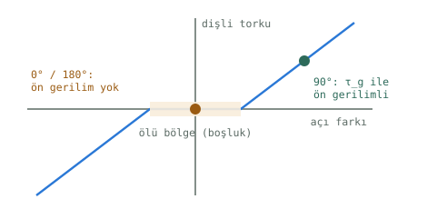
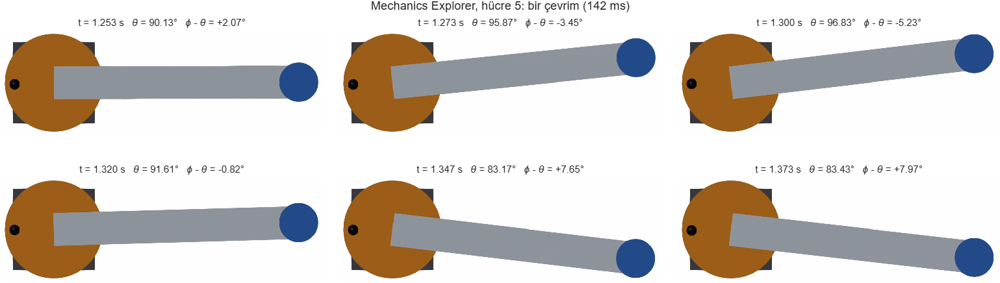
Literatür beş turda tarandı: yüzü aşkın sorgu, yaklaşık 50 makalenin tam metni (danışman listesindeki kaynaklar dahil). Her makaleye "ne yapmış, bizden farkı ne" notu düşüldü (literatur/okuma_notlari.md).
| Tarih | Kaynak | Ne yapıldı |
|---|---|---|
| 18 Eki | IEEE Xplore | 26 sorgu, 130 tekil makale. "Yerçekimi + boşluk + çalışma noktası" sorguları 0 sonuç. |
| 18 Eki | OpenAlex, Semantic Scholar, Crossref, arXiv | IEEE dışı yayınevleri; boşluk derlemesi Nordin–Gutman 2002'ye atıf yapan 497 çalışma süzüldü. |
| 22 Eki | Web of Science | ≈ 12 sorgu, 45 kayıt tek tek incelendi. Boşluk + yerçekimi + DF birleşimi 0 kayıt. |
| 24 Eki | OpenAlex + web | En yakın 8 makaleye atıf yapan 75 çalışma, 17 hedefli sorgu (13'ü 0 sonuç). Doğrudan rakip yok. |
| 5 Kas | IEEE, WoS, web, patentler | Yeni çerçevenin kontrolü, 4 tur (IEEE 28, WoS 6, web 16 sorgu), ≈ 12 yeni tam metin. |
Okunanlar dört gruba ayrılıyor. (1) Salınımı inceleyenler (Ghaffari 2013, Kollár–Stépán 2002, Malzahn 2014): ön yükün salınımı önlediğini ve ters sarkaçta boşluğun salınım ürettiğini gösteriyor, sorunu çözmüyor. (2) Gözlemciyle telafi edenler (DOB/ESO çalışmaları, Wang 2024): yerçekimi yok. (3) Motor sinyaliyle ölçenler (Gebler–Holtz 1998, Ruderman–Iwasaki 2016, Giovannitti 2022): kola sensör koymadan boşluğu ya da dişli torkunu kestiriyor, ama kolun hangi yüzde durduğunu kestirmiyor. (4) Kalıcı hatayı düzeltenler (Neubauer 2015): motor torkunun işaretinden yüzü seçip hedefe ofset ekliyor; tork sıfırken, yani tam 180°'de, kural tanımsız. Bağlantı: 4. grubun kuralı, 1. grubun sorunu gözlediği noktada çalışmıyor. Bu çalışmanın güncel katkısı bu boşluğu dolduruyor: 180°'de yüz kestirimi, yalnız motor sinyalleriyle.
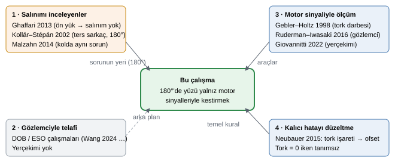
Bölüm 2 sistem modelini ve dijital ikizi tanıtıyor. Bölüm 3 dersin konularını bu modele uyguluyor; sonuçları sonraki bölümlerin dayanağı: özdeğerler 180°'nin neden özel olduğunu, gözlenebilirlik analizi yüz belirsizliğinin ne olduğunu, gözlemci de çözümün hangi parçasıyla çalıştığını açıklıyor. Bölüm 4 ilk çerçeveyi (adım 4 raporu) özetliyor, Bölüm 5 çerçevenin neden değiştiğini, Bölüm 6 güncel çalışmayı anlatıyor. Bölüm 7 süreç boyunca yapılan hataları ve düzeltmeleri, Bölüm 8 sınırları ve sonraki adımları veriyor.
README.md §1–3, literatur/, calisma_notu/framing.md §1–4, ozel/ders_raporu/kt1.texDüzenek bir JGB37-520 dişli DC motor (12 V, 1:30, durma torku 0,49 N·m), boşluğu ayarlanabilir bir kaplin (toplam 1,5 / 3 / 5°), 15 cm'lik alüminyum kol ve değiştirilebilir bir uç kütlesinden oluşuyor. İlk çerçevede beş düzenek seçeneği karşılaştırıldı ve D düzeneği seçildi: ağır uç kütlesi (≈ 153 g) ile kolun eylemsizliği motorun kola yansıyan eylemsizliğine eşitlenir (R = JL/JM ≈ 1). Algılama: motorun arka miline takılan AS5600 manyetik açı sensörü (kontrolcünün gördüğü tek konum, kol tarafında ≈ 0,003°), kol milinde ikinci bir AS5600 (yalnız doğrulama, kontrolcü görmez), INA228 akım ölçer, iki TMP117 sıcaklık sensörü. Sürücü DRV8874, denetleyici ESP32-S (1 kHz kontrol döngüsü).
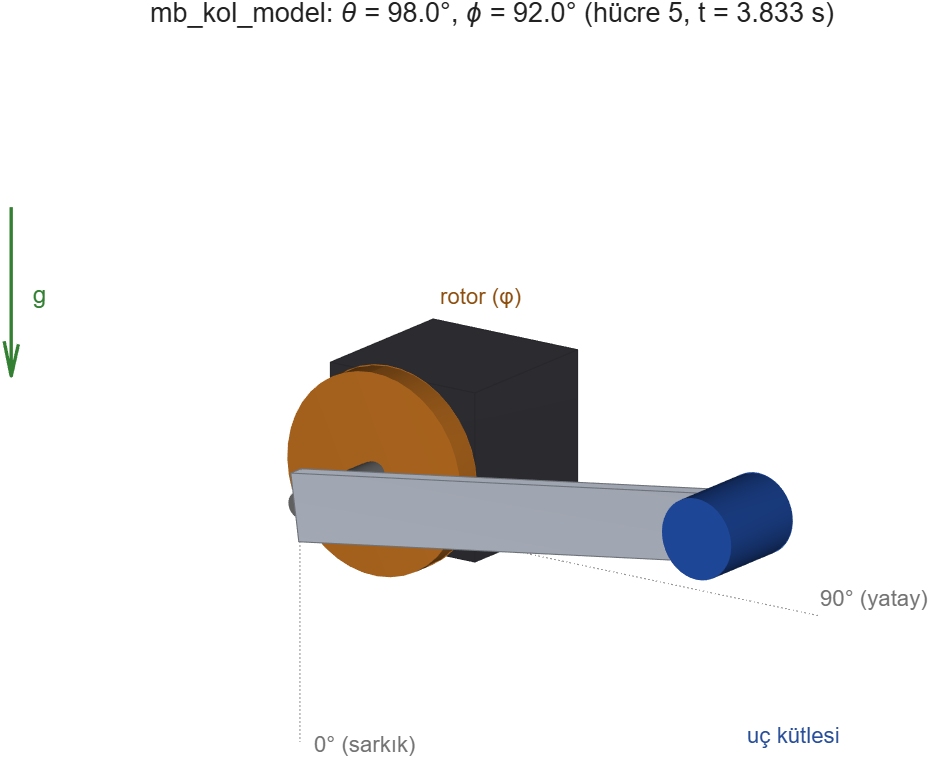
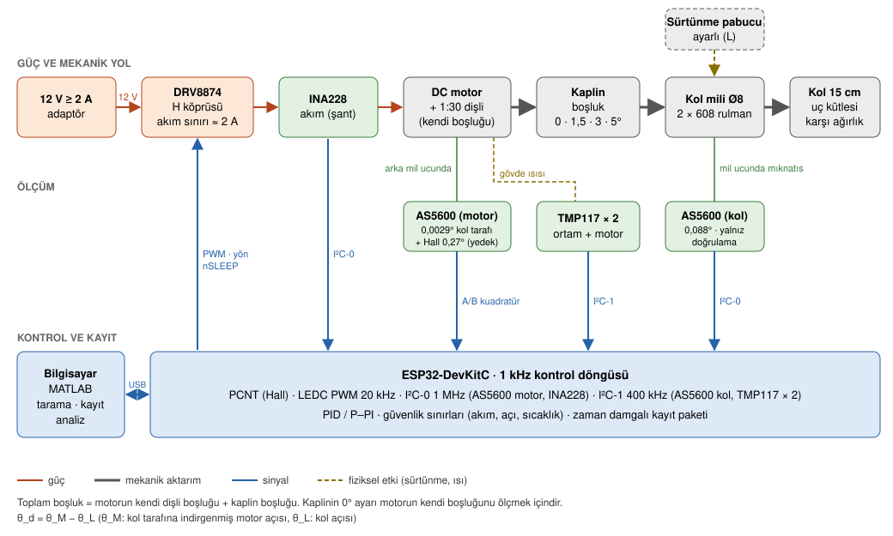
Motor (eylemsizlik JM, açı φ) ile kol (JL, θ) arasında boşluklu ve esnek bir dişli var. Bütün büyüklükler dişli çıkışına, yani kol tarafına indirgenmiş: motorun rotor eylemsizliği N² ile çarpılır (JM = Jrot·N²), motor açısı N'ye bölünür. Dişli sapması δ = φ − θ, boşluğun yarı genişliği r.
Hareket denklemleri (kol_benzetim.m, yerel fonksiyon f):
Motorun elektrik tarafı gerektiğinde beşinci durum olarak eklenir: La di/dt = V − Ra i − Km φ̇, τm = Km i. Gerilim sürüşüyle yapılacak deneyler (iş sırası 5c) bu modelle sınandı. Bölüm 3.1'de elektrik kutbunun mekanik kutuplardan yaklaşık 45 kat hızlı olduğu gösteriliyor; bu yüzden analizlerin çoğu torkla sürülen dört durumlu modelle yapıldı.
| Büyüklük | Değer | Kaynak | İkizde tanılama doğruluğu |
|---|---|---|---|
| Dişli oranı N | 30 | veri sayfası | — |
| Motor eylemsizliği JM = JrotN² | 3,6·10⁻³ kg·m² | Jrot = 4·10⁻⁶ tahmin | %0,5 (D1) |
| Kol eylemsizliği JL | 3,6·10⁻³ kg·m² | geometri (20 g çubuk + 153 g uç, ℓ = 0,15 m) | %0,5 (D5) |
| Yerçekimi torku genliği mgℓ | 0,240 N·m | geometri | %0,1 (D3) |
| Dişli sertliği Ks | 10 N·m/rad | tahmin | %0,5–1 (D3) |
| Temas sönümü cs | 0,02 N·m·s/rad | tahmin | %3,5 (D5) |
| Boşluk yarı genişliği r | 1,5° (2r = 3°) | ayarlanabilir kaplin | %0,2 (D4) |
| Viskoz sürtünme bM, bL | 2·10⁻³, 1·10⁻⁴ N·m·s/rad | tahmin | bM %1,4 (D1) |
| Coulomb / yapışma sürtünmesi Fc, Fs | 0,04 / 0,06 N·m | tahmin (yalnız sürtünmeli koşular) | %1 / %1–2,5 (D1, D2) |
| En büyük tork Tmax | 0,49 N·m | veri sayfası (durma torku) | — |
| Motor sabiti Km | 0,344 V·s/rad | 12 V / 333 rpm (veri sayfası eşdeğeri) | %0,05 (D1) |
| Sargı direnci Ra, endüktansı La | 8,43 Ω, 2,5 mH | Km·12 V/0,49 N·m; La tahmin | Ra D1'de |
Türetilen büyüklükler: dişli rezonansı ωr = √(Ks(JM+JL)/(JMJL)) = 74,5 rad/s (11,86 Hz), anti-rezonans ωa = √(Ks/JL) = 52,7 rad/s (8,39 Hz). D5 vuruş testinde ölçülen 8,4 Hz bu ikincisidir. Dosyalar: simulasyon/parametreler.m (taban), 4a_ghaffari/secenek_duzenek.m ('D'), kol_benzetim.m (elektrik varsayılanları).
Kontrolcü Ghaffari 2013 ile aynı yapıdaki P–PI kaskattır: dışta konum P (kp), içte hız PI (KV, KI), hız motor tarafından. Komut ωcmd = kp e, tork τ = KV(ωcmd − ω) + KI ∫(ωcmd − ω) dt, doyum ±Tmax, doyumda integral durur. D düzeneğinde KV = ωa(JM + JL) = 0,380 N·m·s/rad, KI = 0,05 ωa KV = 1,00 N·m/rad. Konum kazancı boyutsuz sertlik oranından seçilir: kp = rgs² Ks/KV (rgs = 0,50 için 6,59 1/s). İlk çerçevede konum hatası kol açısından, güncel çalışmada motor açısından hesaplanır (Bölüm 5).
Gerçekçi koşularda kontrolcü 1 kHz'te çalışır. Motor milindeki AS5600 için 12 bit nicemleme (kol tarafında 2π/(4096·30)), 0,4 ms gecikme (SF = 11 filtresi 0,286 ms + iç örnekleme + I²C okuması) ve 0,043° RMS gürültü (motor milinde) modellenir. Kontrolcünün hızı tork gözlemcisinden gelir (Bölüm 3.7). Tork ölçümü INA228'in 0,54 ms dönüşüm penceresi ve 0,1 ms okuma gecikmesiyle modellenir; akım döngüsü 500 Hz.
Açı × kazanç taramaları binlerce koşu gerektirdiği için vektörize bir MATLAB betiğiyle (kol_benzetim.m, sabit adımlı RK4, 0,1 ms) yapıldı. Aynı model Simulink'te blok olarak, Simscape'te fiziksel bloklarla (elektrik tarafı dahil) ve Simscape Multibody'de 3B olarak yeniden kuruldu. Simulink betikle bit düzeyinde aynı sonucu veriyor. Simscape'te rejim sınıfı 10/10 hücrede aynı, genlik farkı ≤ %0,3. Elektrik modelinde 36 hücrenin 30'u ölçütü sağladı; kalan 6'sı kritik sınırın çok üstünde, gerilimin doyumda olduğu düzensiz bir hücrede (Ek C).
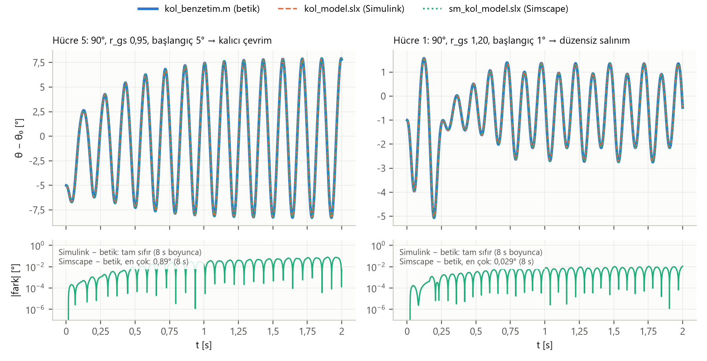
README.md §6, simulasyon/simulink/Bu bölüm dersin konularını bu düzenek üzerinde uyguluyor. Bütün sayılar ve grafikler rapor/son_rapor/bolum3_dogrusal.m betiğinden geliyor (tam metni ve logu Ek B'de). Symbolic Toolbox kullanılmadı: Jacobian elle türetilip sayısal sonlu farkla, transfer fonksiyonu elle türetilip Control System Toolbox'ın tf'siyle, ayrıklaştırma elle (matris üsteli) türetilip c2d ile sağlandı. Açılar derece cinsinden.
Durum, bir sonraki anı hesaplamak için saklanması gereken en küçük değişken kümesidir. Bir kütleyi tarif etmek için konumu ve hızı gerekir (tork ivmeyi değiştirir, konumu değil); bir bobinin hafızası akımdır, çünkü akım bir anda sıçrayamaz. Doğrusal hâlde model ẋ = Ax + Bu, y = Cx biçimine iner.
x = [θ, ω, i]T, giriş V, çıkış θ. θ0 = 90°'de:
| 0 | 1 | 0 |
| 0 | −9,524 | 0,9524 |
| 0 | −0,02 | −2 |
| 0 |
| 0 |
| 2 |
| 1 | 0 | 0 |
Dişli sağ yüzde temastayken (δ > r) temas torku Ks(δ − r) + csδ̇ doğrusaldır; sabit r terimi denge noktasına gider. Dengeden sapma değişkenlerinde dört durumlu model x = [φ, ωM, θ, ωL]T, giriş τm:
| 0 | 1 | 0 | 0 |
| −Ks/JM | −(bM+cs)/JM | Ks/JM | cs/JM |
| 0 | 0 | 0 | 1 |
| Ks/JL | cs/JL | −(Ks+mgℓ cos θ0)/JL | −(bL+cs)/JL |
| 0 |
| 1/JM |
| 0 |
| 0 |
Çıkış için iki seçenek var: motor açısı Cmotor = [1 0 0 0] (kontrolcünün gördüğü) ve kol açısı Ckol = [0 0 1 0] (yalnız doğrulama). 3.4 ve 3.5'teki karşılaştırmalar bu ikisinin farkına dayanıyor. θ0 = 90°'de sayısal olarak:
| 0 | 1 | 0 | 0 |
| −2778 | −6,111 | 2778 | 5,556 |
| 0 | 0 | 0 | 1 |
| 2778 | 5,556 | −2778 | −5,583 |
| 0 |
| 277,8 |
| 0 |
| 0 |
Karmaşık çift dişli rezonansıdır: iki kütle yay üzerinde birbirine karşı salınır. Yavaş iki kutup bütün kolun birlikte dönmesine aittir. Akımı beşinci durum olarak eklemek (giriş V; Km = 0,344, Ra = 8,43 Ω, La = 2,5 mH) A'ya bir sütun [0, Km/JM, 0, 0]T ile bir satır [0, −Km/La, 0, 0, −Ra/La] ekler. Yeni özdeğerler −3367, −6,68 ± 74,2j, −2,25 ve 0. Elektrik kutbu (≈ −Ra/La = −3371 rad/s, 537 Hz) mekanik kutuplardan yaklaşık 45 kat hızlı. Akım döngüsü (500 Hz) torku izlediği için bölümün geri kalanında dört durumlu, torkla sürülen model kullanılıyor.
parametreler.m) aittir; betik o parametrelerle 18,57 Hz buluyor. D düzeneğinde rezonans 11,86 Hz, anti-rezonans 8,39 Hz. Bölüm 7'ye E1 olarak eklendi.Dengede (ẋ = 0) hızlar sıfır, kol denkleminden τs = mgℓ sin θ0, motor denkleminden de τm0 = τs. Motor kolun ağırlığını taşıyacak bir tutma torku vermeli, dişli de bunu iletmek için esner: δ0 = r + mgℓ sin θ0/Ks. Doğrusallaştırma A = ∂f/∂x|x0'dır. Elle türetildiğinde açıya bağlı tek eleman A43 = −(Ks + mgℓ cos θ0)/JL çıkar: yerçekimi, dişli yayının yanına eklenen ikinci bir yay gibi davranır.
| θ0 | τm0 [N·m] | δ0 [°] | mgℓ cos θ0 | A43 | Özdeğerler [1/s] | Yerçekimi |
|---|---|---|---|---|---|---|
| 0° | 0 | 1,50 | +0,240 | −2845 | −5,70 ± 74,5j, −0,15 ± 5,76j | geri getirici |
| 90° | 0,240 | 2,88 | 0 | −2778 | −5,70 ± 74,3j, −0,29, 0 | nötr |
| 180° | 0 | 1,50 | −0,240 | −2711 | −5,70 ± 74,1j, −5,94, +5,65 | itici (negatif yay) |
Sağlama. Doğrusal olmayan f'nin (kol_benzetim.m'deki model, temas kopmuyor varsayımıyla) merkezi sonlu farkı h = 10⁻⁶ ile alındı. Elle türetilen A ile en büyük bağıl fark üç açıda da ≤ 1,4·10⁻¹⁰. 0°'deki yavaş karmaşık çift kolun sarkaç gibi ~0,92 Hz'de salınıp yavaşça sönmesi; 180°'deki pozitif reel özdeğer ters sarkaçtır. KT1 modelinde de aynı tablo var: A21 = −mgℓ cos θ0/J, yavaş özdeğer 0°'de −0,52, 180°'de +0,467.
0° ve 180°'de Jacobian aslında tanımsız. Bu iki açıda tutma torku sıfır, denge tam boşluk kenarına (δ0 = r) düşer. Ölü bölgeli gerçek modelde motor açısını kenardan temas yönüne itince ∂ω̇M/∂φ = −2778, boşluk yönüne itince 0 çıkıyor (tek yönlü farklar, Ek B logu). Fonksiyon kenarda dal değiştirdiği için tek bir türev yok. Tablodaki 0° ve 180° satırları kolun bir yüze dayalı kaldığı varsayımına göre. Boşluk tarafındaki matriste motor ile kolu bağlayan terimlerin hepsi sıfır, yani A blok köşegen: 3.5'teki gözlenemezliğin ilk izi.
θ0 0°'den 180°'ye 1°'lik adımla tarandı (Şekil 3.1). Dişli rezonansı çifti açıyla neredeyse hiç değişmiyor (|Im| 74,1–74,5 rad/s); açı yalnız yavaş kutupları etkiliyor. 0°'de karmaşık olan yavaş çift, açı arttıkça sanal eksen boyunca yaklaşıp orijinde birleşiyor, 90°'yi geçince gerçel eksende ayrılıyor ve biri sağ yarı düzleme geçiyor (ilk kez 91°'de). 180°'de pozitif özdeğer +5,65 1/s (zaman sabiti 177 ms). Dişli rijit sayılsaydı ters sarkacın büyüme hızı √(mgℓ/(JM+JL)) = 5,78 1/s olurdu; esneklik bunu biraz azaltıyor.
Kapalı çevrim. Koddaki motor tarafı P–PI (rgs = 0,50; KV = 0,380, KI = 1,00, kp = 6,59) eklenince durum integratörle beşe çıkar: x = [φ, ωM, θ, ωL, z], z' = −kpφ − ωM, τ = KV(−kpφ − ωM) + KI z. Konum hatası motor açısından hesaplandığı için ofset dengeye gider, A değişmez. En sağdaki özdeğerin gerçel kısmı bütün açılarda ≤ −2,27 1/s (en kötü 0°); 180°'de kapalı çevrim kutupları −69,4, −18,8 ± 54,7j, −7,00, −3,05. Doğrusal modelde 180° kapalı çevrimde kararlı. 180°'deki sorun kararlılık değil, boşluk içindeki yüz bilgisi (3.5).
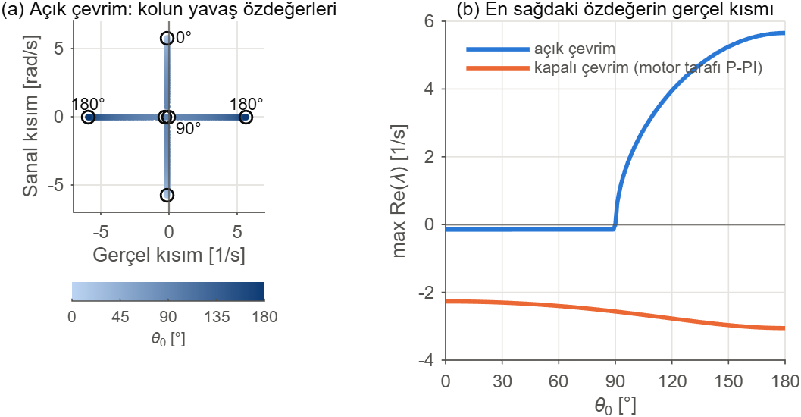
B1 bağlantısı. İlk benzetimlerde, türev terimi kol hızından alınınca boşluk olmasa bile ωc ≥ 20 rad/s'de kararsızlık görülmüştü. Aynı PID (rijit model kazançları Kp = Jωc², Kd = 1,4Jωc, Ki = Kpωc/4) doğrusal modelde 90°'de özdeğerle tarandı. Eski parametrelerle (rezonans 18,57 Hz) türev kol hızındayken ilk kararsız ωc = 20,0 rad/s, motor hızındayken 67,5 rad/s. Benzetimdeki sonuç doğrusal analizle birebir tutuyor. D düzeneğinde (rezonans 11,86 Hz) sınırlar 8,5 ve 40,0 rad/s: rezonans düştükçe sınır da düşüyor. Nedeni 3.4'te.
Torktan iki açıya giden transfer fonksiyonları elle türetildiğinde payda ortak, paylar farklı çıkar:
90°'de paylar [277,78 1550,9 7,716·10⁵] ve [1543,2 7,716·10⁵], ortak payda s⁴ + 11,69 s³ + 5559 s² + 1620 s; ss → tf dönüşümüyle basamak basamak aynı. GM'nin sıfırları −2,79 ± 52,63j (|z| = 8,39 Hz, anti-rezonans), GL'nin tek sıfırı −Ks/cs = −500 (uzakta).
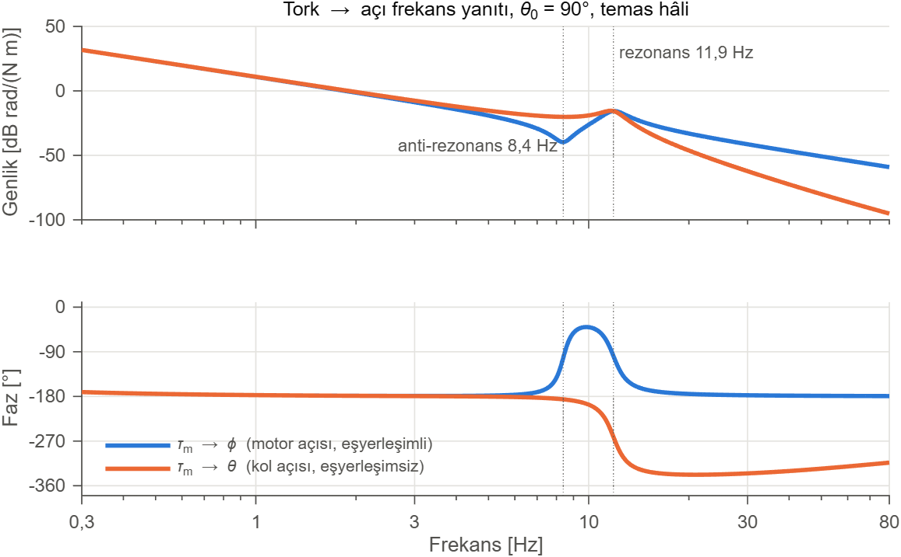
Fark fazda: rezonansın üstünde (40 Hz) GM'nin fazı −178°, GL'ninki −330°. Eşyerleşimli ölçümde her rezonans kutbu çiftinin önünde bir sıfır çifti (anti-rezonans) olduğu için faz geri gelir ve döngü rezonans bölgesinde güvenli kalır. Eşyerleşimsiz ölçümde bu sıfır yok; hızlı bir döngü kol açısından ya da kol hızından kapatılırsa rezonansta ek −180° faz döngüyü kararsızlığa iter. B1'in nedeni budur ve bu, sönümün motor tarafından alınması gerektiği tasarım kuralını doğrular. Rezonans düştükçe (D'de 11,9 Hz) bu faz kaybı daha düşük frekansta başlar, sınır da düşer.
Gözlenebilirlik şunu sorar: yalnız çıkışı (burada motor açısını) zaman içinde izleyerek bütün durumu, kolun açısı ve hızı dahil, geri çıkarabilir miyiz? Ölçüt, gözlenebilirlik matrisi O = [C; CA; CA²; CA³]'ün rankının durum sayısına (4) eşit olmasıdır. Kontrol edilebilirlik bunun ikizidir: Ctr = [B, AB, A²B, A³B]'nin rankı 4 ise torkla her durum istenen yere götürülebilir. Sayısal olarak A⁴'ün elemanları ~10¹⁰ mertebesine çıktığı için zaman rezonansla ölçeklendi (A/ωr); rank kararı tekil değer oranı σi/σ1 > 10⁻⁹ ile verildi. Elle kurulan O ve Ctr'nin rankı her durumda obsv/ctrb ile aynı.
| Hâl | rank O | O'nun tekil değerleri / σ1 | rank Ctr | Yorum |
|---|---|---|---|---|
| Temas | 4 | 1; 0,384; 1,33·10⁻²; 5,06·10⁻³ | 4 | kol motor ölçümünden görülür, torkla sürülür |
| Boşluk (Ks = cs = 0) | 2 | 1; 1,34·10⁻²; 0; 0 | 2 | kolun iki durumu ne görülür ne sürülür |
Boşlukta A blok köşegen olur: A = [Amotor 0; 0 Akol], Cmotor = [1 0 | 0 0], B = [0 1/JM | 0 0]T. Matrislerin yapısı sonucu doğrudan söylüyor: motor bloğundan kol bloğuna giden hiçbir terim yok. Kolun durumları motor ölçümüne hiçbir yoldan ulaşamaz ve motor torku kola hiçbir yoldan ulaşamaz. Kol ölçümüyle (Ckol) boşlukta rank yine 2'dir, bu kez kol görülür ve motor görülmez.
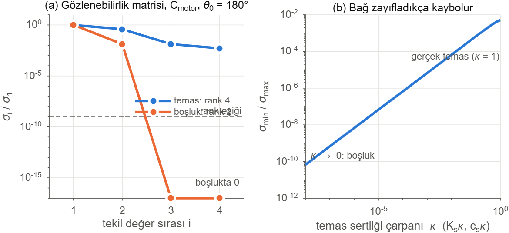
Kontrolcü ESP32'de 1 kHz'te çalışır ve torku bir örnek boyunca sabit tutar (sıfırıncı derece tutucu, ZOH). Bu varsayımla tam ayrık model x[k+1] = Adx[k] + Bdu[k], Ad = eATs, Bd = ∫0TseAtdt·B. İkisi tek bir matris üstelinden elde edilir: expm([A B; 0 0]Ts) = [Ad Bd; 0 I]. Elle hesaplanan Ad ile c2d(…, 'zoh') arasındaki en büyük fark 4,4·10⁻¹⁶ (90°) ve 8,9·10⁻¹⁶ (180°).
Özdeğerler z = esTs ile eşlenir; eig(Ad) ile exp(eig(A)Ts) basamak basamak aynı. Sol yarı düzlem birim çemberin içine, sağ yarı düzlem dışına düşer: 180°'deki s = +5,65 kutbu z = 1,00567'ye gider (|z| > 1, kararsız), kapalı çevrimin en büyük |z|'si 0,99695. Rezonans kutbu z = 0,9916 ± 0,0736j'ye düşer: rezonansta ωrTs = 0,0745 rad/örnek, yani her rezonans periyodunda 84 örnek. Nyquist frekansı (500 Hz) rezonansın (11,9 Hz) yaklaşık 40 katı. Bütün kutupların z = 1 çevresinde toplanması da 1 kHz'in bu mekanik sistem için hızlı olduğunu gösteriyor.
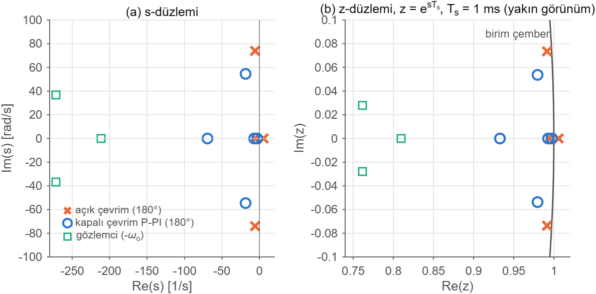
1 kHz kararı ESP32 tarafında da ölçüldü (Bölüm 6.6): periyot sapması en çok ~10 µs (periyodun %1'i), algoritmanın bir adımı 3,5 µs. İkizde 2 ms'ye kadar ölçüm gecikmesi sonucu değiştirmediği için zamanlama payı geniş.
Koddaki tork gözlemcisi (kol_benzetim.m; kartta kontrol.cpp) yalnız motor kütlesini modeller. Dişli torku ve sürtünme bilinmeyen bir bozucu d olarak duruma eklenir (genişletilmiş durum, d sabit varsayılır):
L, bM = 0 alındığında hata dinamiğinin karakteristik polinomunu (s + ωo)³ yapacak biçimde seçilmiş (üçlü kutup). Sayısal olarak L = [754; 1,895·10⁵; −5,715·10⁴]. bM terimiyle eig(Ao − LCo) = −271,6 ± 36,7j, −211,4: üçlü kök küçük bir bozulmaya duyarlı olduğu için −251,3'ün çevresinde ±%15 dağılıyor, kararlılık payı değişmiyor. Kodun güncellemesi ileri Euler'dir (x̂ ← x̂ + Ts(…)); ayrık hata dinamiğinin özdeğerleri 0,728 ± 0,037j ve 0,789 (|z| ≤ 0,789). ZOH karşılığı e−ωoTs = 0,778; ωoTs = 0,25 küçük olduğu için Euler yeterli. Kestirim süresi ~3/ωo = 12 ms; koddaki yoklama itişinin en kısa süresi (yokTmin = 3/gozW) bu yüzden bu değere bağlı.
Neden boşlukta da çalışıyor? (Ao, Co) çiftinin gözlenebilirlik rankı 3'tür ve temas ya da boşluk fark etmez, çünkü dişli torku modelin içinde değil, kestirilen bozucu d'nin içindedir. Gözlemci kolun durumunu kestirmeye çalışmaz (3.5'e göre boşlukta bu imkânsız), motor tarafında görünen bir büyüklüğü kestirir: d̂. Boşlukta d̂ ≈ 0 olması da bilgidir ("temas yok"). Yüz kestirici bu büyüklüğü kullanıyor (Bölüm 6.3).
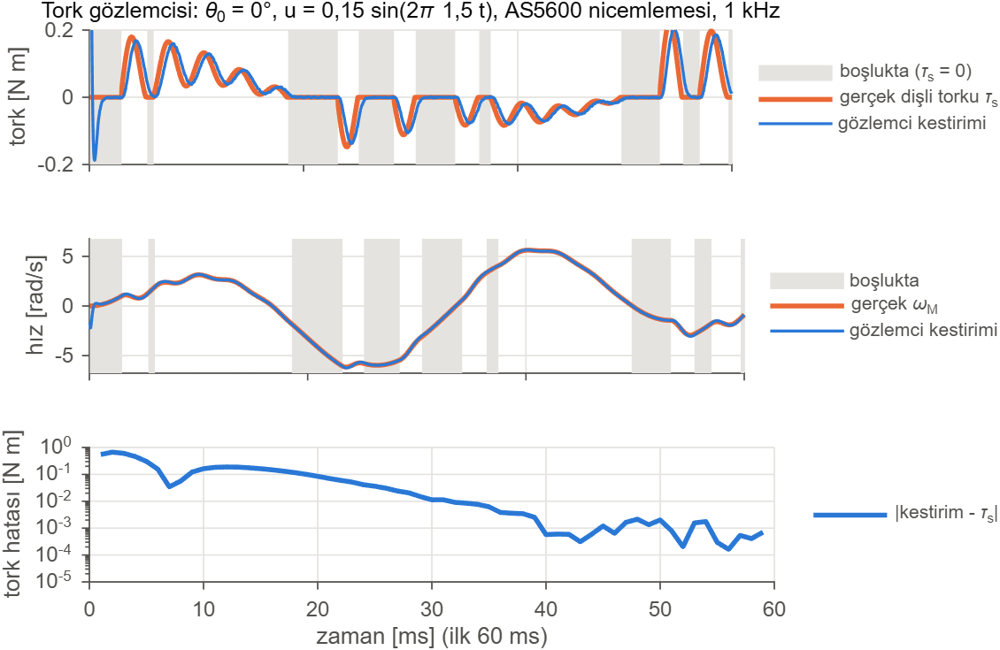
Benzetimde d̂ hatası ilk kez 36 ms'de 0,005 N·m'nin altına iniyor. Sonrasında (t > 0,1 s) |d̂ − τs| RMS 0,031 N·m, |ω̂ − ωM| RMS 0,036 rad/s. En büyük hata (0,118 N·m) temasın başladığı anlarda: temas torku 40 Hz'lik gözlemci bandından hızlı yükseliyor ve d̂ birkaç milisaniye geride kalıyor. Koddaki olay sezicisinin 0,015 N·m'lik eşiği 10 ms boyunca aşılmasını beklemesinin nedeni bu. Boşlukta d̂'nin RMS değeri 0,012 N·m: gözlemci temasın bittiğini de görüyor.
Neden periyot kestirimi değil gözlemci? İlk çerçevede hız, enkoder kenarları arasındaki sürenin ölçülmesiyle kestiriliyordu. Bu yöntem düşük hızda gecikmeli ve salınım sınırını değiştiriyordu (C6). Gözlemci hem hızı hem dişli torkunu aynı iki satırlık güncellemeyle veriyor; donanım tasarım belgesindeki "kenar zamanlaması" ifadesi de buna göre düzeltildi (D5).
Boşluk doğrusal değildir; Bölüm 3.2'de görüldüğü gibi δ = r kenarında Jacobian yoktur. Salınım (limit cycle) incelemesinin ders araçlarına en yakın yolu tanımlama fonksiyonudur (DF). Ölü bölgeye A sin ωt girdiğinde çıkışın birinci harmoniği N(A)·A sin ωt olarak yazılır. N(A), genliğe bağlı eşdeğer bir kazançtır: büyük genlikte 1'e, A → r'de 0'a gider. Döngünün geri kalanı G(jω) ise kalıcı salınım koşulu G(jω) = −1/N(A)'dır. Nyquist diyagramında G'nin −1/N eğrisini kestiği nokta salınımın genliğini ve frekansını verir. Ghaffari 2013 bu yöntemi simetrik (yerçekimsiz) bir servo eksende kullanıyor.
Yerçekimli kolda dişli sapmasının ortalaması sıfır değildir: δ = B + A sin ωt. İlk çerçevenin yöntem katkısı bu iki girişli DF'dir. İki koşul birlikte çözülür. Birincisi DC dengesi: dişlinin ilettiği ortalama tork yükü taşır, n0(a, b) = γ. İkincisi birinci harmonik: n1(a, b)·L(jω) = −1. Tek açı parametresi γ = mgℓ sin θ0/(Ksr), yük torkunun boşluğu kapatan yay torkuna oranıdır. 0° ve 180°'de γ = 0 olur ve Ghaffari'nin DF'si birebir geri gelir; Jacobian'ın tanımsız olduğu iki nokta (3.2) DF'nin de "ön yüksüz" sınırıdır. Yöntem ve sonuçları Bölüm 4.4'te, hesapların tamamı adım 4 raporunun 5. bölümünde.
rapor/son_rapor/bolum3_dogrusal.m ve bolum3_dogrusal_log.txt (Ek B), 01_envanter.md §4, Hespanha 2009, adım 4 raporu §518 Ekim – 5 Kasım arasındaki çalışmanın özeti. Ayrıntılar adım 4 raporunda (rapor/adim4_simulasyon_ve_dogrulama.pdf, 49 sayfa); burada yalnız sonuçlar ve sonraki bölümlere taşınanlar var.
İlk soru şuydu: yerçekiminin açıya bağlı ön yükü, boşluk kaynaklı kendiliğinden salınımın oluşup oluşmadığını nasıl belirler ve bu sınır öngörülebilir mi? İlk hipotez "90°'de salınım olmaz" idi. Sun 2023'te 90°'de yüksek kazançta salınım raporlandığı görülünce (A2) hipotez iki eksenli hâle getirildi: sınır, yerçekimi torkunun dinamik torka oranına bağlıdır, yani açı ve kazanç birlikte. Bu yüzden bütün sonuçlar açı × kazanç haritası olarak üretildi.
İki kütleli modelde açı × kapalı çevrim hızı taraması ideal, sürtünmeli ve gerçekçi (nicemleme, 1 kHz, sürücü ölü bandı) modellerde yapıldı (Şekil 4.1). Etki küçük bir düzenekte ölçülebilir büyüklükte çıktı. 24 farklı düzenekle yapılan taramada sınır iki boyutsuz sayıyla toplandı: yük oranı γ ve rezonans oranı ρ, γsınır ≈ 3ρ³ (Şekil 4.2). Aynı aşamada B1 tasarım kuralı bulundu: sönüm motor hızından alınmalı (Bölüm 3.3–3.4).
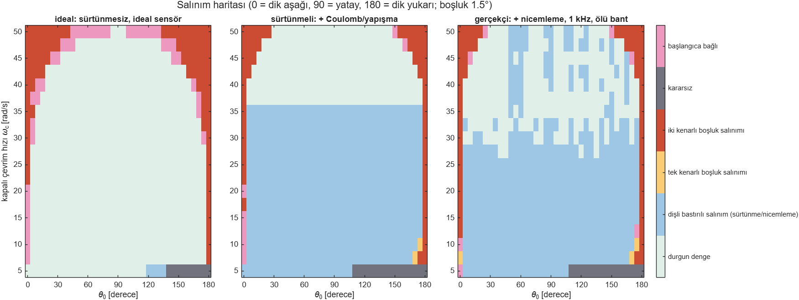
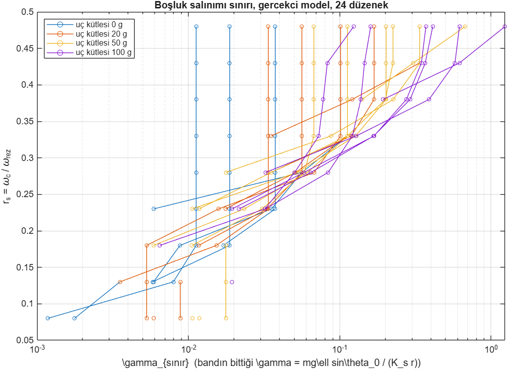
En yakın literatür sonucu, Ghaffari ve Mohammadiasl 2013'ün (IEEE/ASME TMECH) servo eksen modeli ve DF'si, makaledeki parametrelerle yeniden kuruldu. Şekil 7/8 benzetimleri ve döner tabla deneyi (Şekil 11, Tablo I) üretildi. Yeniden üretilen DF'nin deneye uyum hatası %20,2 / %22,1; makalede %19,6 / %21,4. DF frekansları noktası noktasına aynı. İki ayrıntı yeniden üretimi zorlaştırdı: makale motor tork sınırını bildirmiyordu (A4; ≈ 360 N·m eklenince sürtünmeli hata %18–20'den %3,9'a indi) ve Şekil 7/8 başlıklarındaki rgs değerleri şekillerle tutarsızdı (A3).
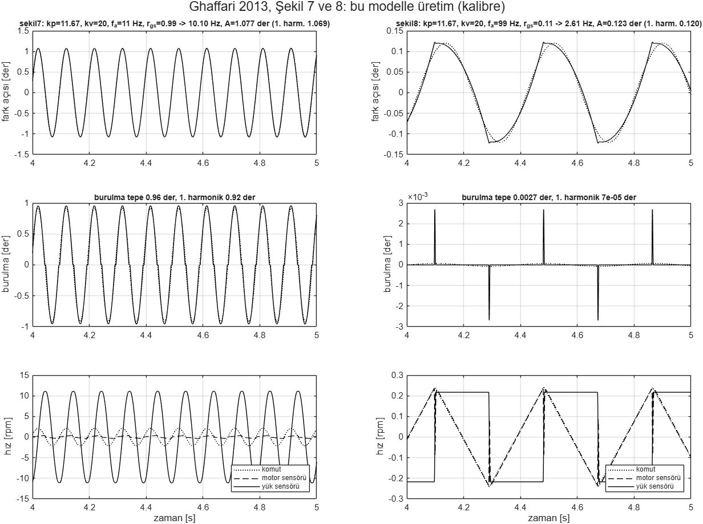
Ghaffari'nin DF'si kendi düzeneğimize doğrudan uygulanınca R = JL/JM = 0,17'de frekansı 2–5 kat yanlış verdi (C4). Bölüm 3.8'de anlatılan iki girişli DF geliştirildi; temas sönümü ve ön yüklü tork sınırı da eklendi, kapalı biçim sağlamaları 7/7 tuttu. Açı 0–180° (5° adım) × rgs 0,3–1,3 taramasında kritik kazanç hatası D düzeneğinde medyan %19 (en çok %42), Ghaffari DF'sinde %81: 4,3 kat iyileşme. Katkıların ayrışması: sönümsüz DF %30 → temas sönümüyle %24 → tork sınırıyla %19. Hata sistematik ve temkinli yönde (DF salınımı benzetimden daha düşük kazançta öngörüyor). Kalan %19'un kaynağı üç parçada sınandı (kök neden sınaması); DF, kesin sınır yerine bir araç olarak kaldı (C5).
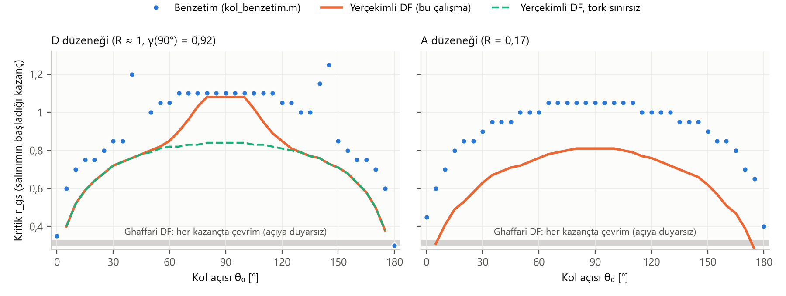
Beş düzenek seçeneği (A, B1, B2, C, D) ideal, sensörlü ve sürtünmeli haritalarda karşılaştırıldı; D (ağır uç, R ≈ 1) önerildi, C elendi, hız kestiriminin sonucu belirlediği görüldü. Ardından dijital ikiz kuruldu (Bölüm 2.5) ve donanımda gerekecek her parametre için ayrı bir deney tasarlanıp ikizde, yalnız sanal firmware kaydından kestirildi. Bütün parametreler %0,1–3,5 içinde bulundu; tanılanan ikiz kritik rgs'yi gerçek tesisten en çok bir tarama adımı (0,05) farklı öngördü. Bu iş sırasında iki model hatası bulundu ve düzeltildi (B3–B6). Deney protokolü D0–D6 yazıldı (Ek D).
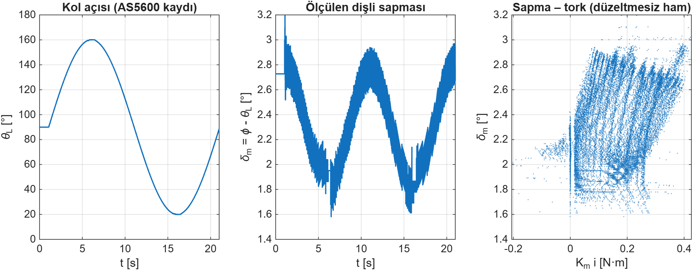
rapor/adim4_simulasyon_ve_dogrulama.pdf §1–16, README.md Ek A, simulasyon/, simulasyon/4a_ghaffari/, simulasyon/simulink/5 Kasım'da çalışmanın yönü değişti. Değişim tek bir karardan değil, aynı gün art arda gelen yedi adımdan oluştu.
thm = olc(x(3,:), p.qL)). Oysa çalışmanın iddiası kontrolcünün kolu görmediğiydi. Sitedeki "3,5× daha hızlı" ve "10–170° salınımsız" sonuçları kol tarafı geri beslemeyle elde edilmişti (A6, B8).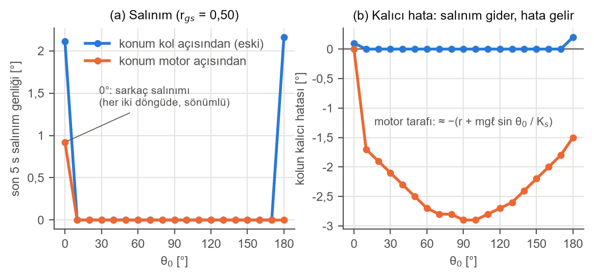
konum_kaynagi_karsilastir_log.txt.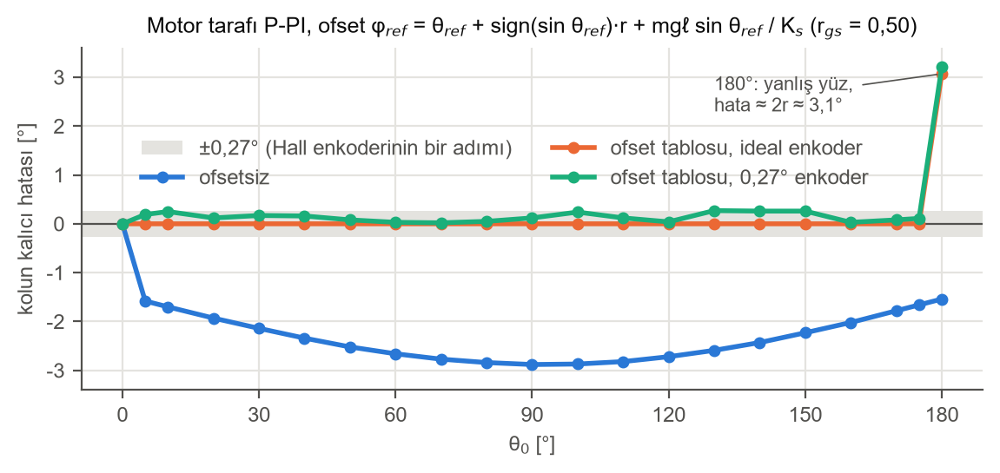
ofset_tablosu_log.txt.| Konu | İlk çerçeve (24 Ekim) | Güncel (5 Kasım) |
|---|---|---|
| Amaç | Salınım sınırını öngörmek ve deneyle doğrulamak | Motor tarafı döngü + ofset tablosu; 180°'de yüz kestirimi |
| DF + dijital ikiz | Sonucun kendisi | Ayar tablosunu üreten ve algoritmayı sınayan araç |
| Kol açısı sensörü | Geri besleme için (fark sonradan görüldü) | Yalnız doğrulama; kontrolcü görmez |
| Motor konumu sensörü | Hall enkoder (kol tarafında 0,27°) | Motor arka milinde AS5600 (kol tarafında ≈ 0,003°) |
| Kazanç planlaması, salınım tespiti | Bileşen 1 ve 2 | Arşiv (geri dönüş noktası) |
| Donanım, düzenek, deney protokolü | D düzeneği, D0–D6 | Değişmedi; D7 (180° deneyi) eklendi |
01_envanter.md §2, calisma_notu/framing.md §0, simulasyon/5_planlama/inceleme_180*.m, konum_kaynagi_karsilastir.m, ofset_tablosu.m, olu_bant_180.m, tablo_ilk.mGüncel soru: yerçekimi ön yükünün sıfıra indiği bölgede (180° ve çevresi) kolun boşluğun hangi yüzüne yaslandığı, kola sensör koymadan, yalnız motor akımı ve motor açısıyla kestirilip ofset tablosunun işareti buna göre seçilebilir mi? Çözüm üç bileşenden oluşuyor: (1) motor tarafı konum döngüsü (P–PI), (2) açıya göre ofset tablosu, φref = θref + s·r + mgℓ sin θref/Ks, (3) s = ±1'i 180° çevresinde seçen yüz kestirici. İlk ikisi bilinen yöntemler; katkı üçüncüsü.
Sensör kararı. Yüzü (δ'nın işaretini) ölçmek için kol sensörü kullanmak kolay ama "kol sensörü yok" iddiasını düşürüyordu. Ara yol seçildi: ikizde önce gerçek yüzle bir üst sınır ölçüldü (6.2), sonra yalnız motor sinyalleriyle çalışan kestirici bu üst sınıra göre değerlendirildi. Kol milindeki AS5600 düzenekte kalıyor ama yalnız hakem.
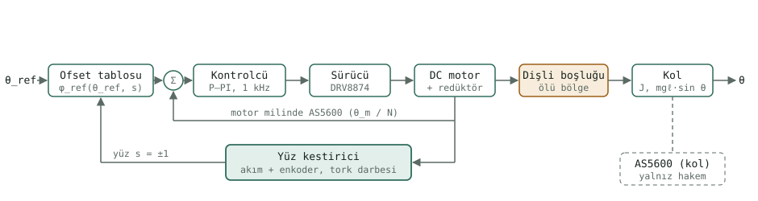
Belirsiz bant. Sürtünmeli ikizde (Fc 0,04, Fs 0,06 N·m) motor tarafı + ofset tablosu 170–180° arasında 0,25° adımla, altı koşu türüyle tarandı. Kol yanlış yüze yalnız 179–180° arasında düşüyor; 179°'nin altında yerçekimi kolu her zaman doğru yüze yaslıyor (Şekil 6.2a). Yüz kestirimi gereken bant |θ − 180°| ≤ 1°. Bu bantta kolu yüzde tutan yerçekimi torku ≤ 0,004 N·m, yani Coulomb sürtünmesinin onda biri (Şekil 6.2b). Durgunken motor torku u = τs + τf ve |τf| ≤ Fs olduğundan, sign(u) yüzü ancak mgℓ|sin θ| > Fs iken kesin söyler (analitik kör bant ±14,5°). "Akımın işaretine bak" türü edilgen bir yöntem bu düzenekte çalışamaz (C8). Buna karşılık kolun karşı yüze çarpması motor tarafında iz bırakıyor: bir devrilme koşusunda dişli torku −0,07 N·m'ye iniyor (Fc'den büyük), motor torku 30 ms içinde işaret değiştiriyor. Durgun işaret kör, ama çarpma olayı gözlenebilir (Bölüm 3.5'in temas hâli).
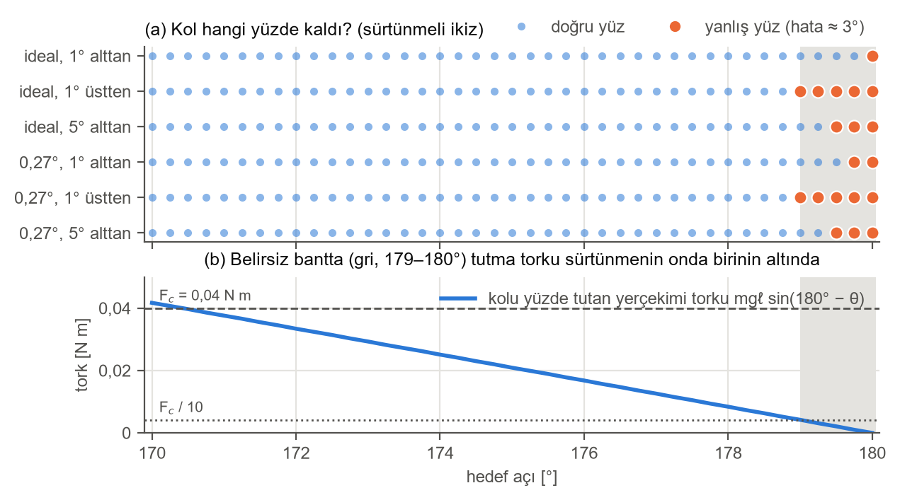
belirsiz_bant_log.txt.Üst sınır. Ofsetteki yüz ikizin gerçek temas yüzünden (sign δ) seçildiğinde, yani yüz kusursuz bilindiğinde ne olur? 24 koşu türü × 41 açı (175–185°): tam 180° düzelmiyor, son 1 s hatası 0,1–2,7° arasında dağılıyor (A7). Neden zaman serisinden okunuyor: integratör kolu yavaşça 180°'ye doğru itiyor, kol 180°'yi geçtiği an yerçekimi yön değiştiriyor, kol boşluğu geçip karşı yüze düşüyor, ofset 2r sıçrıyor, döngü kolu geri çekiyor. 180° yapısal olarak bir anahtarlama yüzeyi: kolu tutan yüz sign(θ − 180°) ile belirleniyor ve hedef tam bu sınırın üstünde. 179–179,5° ve 180,5–181°'de ise gerçek yüzle ofset seçmek hatayı ≈ 3,2°'den ≤ 0,36°'ye indiriyor. Buradan iki karar çıktı: (a) tam 180° istekleri kolun geldiği tarafa göre 179,5° ya da 180,5°'ye kaydırılır (ε = 0,5°); (b) başarı ölçütü H7 buna göre yazıldı.
Kestirici yalnız motor açısını (nicemli), uygulanan torku (INA228'den) ve kendi durumunu görür; θ ve δ'yı görmez. Dört parçadan oluşur:
Tasarım sırasında çıkan üç gözlem: (i) yoklamada "temas mı" sorusuna yol süresiyle cevap verilemiyor, çünkü yumuşak dişli yayında motor ilk 20–30 ms'de temasta da serbest gibi ilerliyor; ayırt eden gözlemcinin dişli torku tahmini (temasta ≈ 0,1 N·m, boşlukta ≈ 0). (ii) Yoklama torku tutma torkunun üstüne eklenmemeli; durgunlukta integratör sürtünmeye yaslanıp u'yu 0,06 N·m'ye çıkarabiliyor, itiş mutlak olmalı. (iii) "Motor durgun" kararı kolun durduğunu söylemiyor; bekleme süresi 0,5 s seçildi.
Senaryolar. İstek 179, 179,25, 179,75, 180, 180,25, 180,75, 181° (0,5°'den yakın olanlar kaydırma kuralıyla 179,5/180,5°'ye kayar); kol ±1,1° uzaktan, iki yönden gelir; bozucu yok / t = 3 s'de kola 180°'ye doğru 0,05 N·m, 20 ms darbe / yanlış başlangıç yüzü. Toplam 42 senaryo, sürtünmeli ve sürtünmesiz ikizde.
| Sürtünme | Enkoder | tablo | üst sınır | edilgen sign(u) | olay | yoklama | olay + yoklama |
|---|---|---|---|---|---|---|---|
| var | ideal | 10 | 42 | 20 | 42 | 42 | 42 (0,18°) |
| var | 0,017° | 10 | 42 | 20 | 38 | 24 | 42 (0,17°) |
| var | Hall 0,27° | 10 | 42 | 23 | 17 | 2 | 4 |
| var | AS5600 motor milinde | 10 | 42 | 20 | 42 | 31 | 42 (0,18°) |
| yok | AS5600 motor milinde | 4 | 4 | 42 | 42 | 38 | 42 (0,03°) |
Edilgen yöntem sürtünmede 20/42'de kalıyor: bozucusuz 14 senaryonun hiçbirinde tutmuyor, çünkü integratör yapışma sürtünmesine yaslanınca u ≈ 0,06 N·m'ye çıkarken dişli torku 0,003 N·m. İki yöntem birbirini tamamlıyor: olay, kolun sessizce konduğu senaryoları kaçırıyor, yoklama bunları yakalıyor; yoklama da düzeltme hareketinin yol açtığı düşüşleri bir sonraki yoklamaya kadar göremiyor, olay bunları yakalıyor. Mevcut Hall enkoderi (0,27°) yetmiyor: çarpma ve yoklama itişi motoru bir enkoder adımı mertebesinde oynatıyor. Bu bir donanım kararına dönüştü: motorun arka miline AS5600 (kol tarafında ≈ 0,003°); kol tarafında kontrolcüye giren sensör yine yok.
Gerçekçi koşullar. Kontrolcü ve kestirici 1 kHz'te, AS5600 0,4 ms gecikme ve 0,043° RMS gürültüyle çalışınca iki ayar gerekti. Durgunluk kararı süzülmüş hızla verildi (gürültü yoklamayı hiç başlatmıyordu); geri dönüşte frene yolun %60'ında geçildi (1 kHz'te geç fren kolu tepeden aşırıyordu). Ayarlı kestirici, 1 ms gecikme ve 3 kat veri sayfası gürültüsü dahil 10/10 koşu türünde 42/42; B13 en çok 0,43°. Gözlemcinin torku INA228 ölçümünden alınınca (5a) ve kontrolcünün hızı gözlemcinin ω̂'si olunca da sonuç aynı: 42/42, kalıcı hata ≤ 0,21°, B13 ≤ 0,33°.
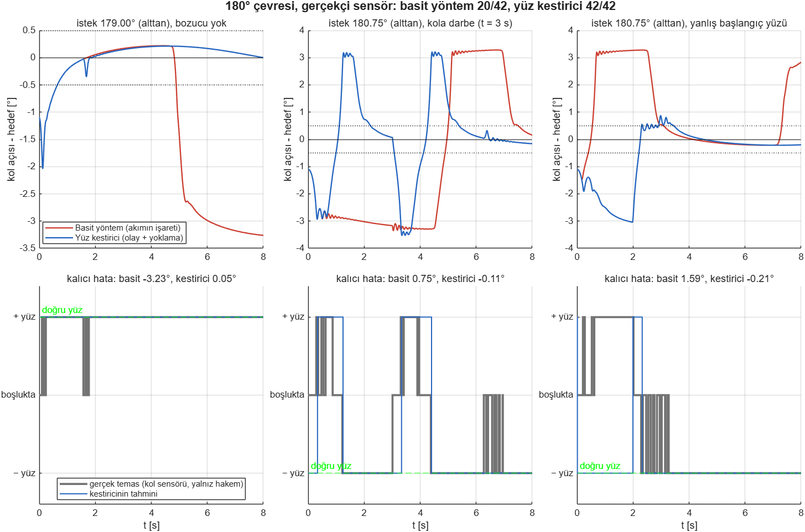
sunum_demo çıktısı (gerçekçi koşul: motor milinde AS5600, 1 kHz, sensör gecikmesi ve gürültüsü, sürtünme). Üst: kol açısının hedeften sapması, kırmızı basit yöntem, mavi yüz kestirici, noktalı çizgiler ±0,5° bandı. Alt: gri gerçek temas yüzü (kol sensöründen, yalnız hakem), mavi kestiricinin tahmini.| Büyüklük | Güvenli aralık | Bozulduğu yer | İkizdeki tanılama doğruluğu |
|---|---|---|---|
| mgℓ, Ks (gerçek) | ×0,8–1,2 | — | %0,1, %0,5–1 |
| r (gerçek) | ×0,9–1,2 | ×0,8: 21/42 (r olduğundan büyük biliniyor) | %0,2 |
| F̂c (gözlemcinin bildiği) | ×0,5–1,2 | ×1,3: B13 3,6°; ×1,5: 31/42 | %1 |
| ĴM (bildiği) | ×0,8–1,3 | ×0,7: 33/42; ×1,5: B13 3,65° | %0,5 |
| INA228 gürültüsü / gecikmesi / ofseti | ≤ 0,02 N·m / ≤ 2 ms / ±0,01 N·m | 0,05 N·m'de yoklama başlamıyor | beklenen ≈ 0,001 N·m |
Kestirici yükten ve dişli sertliğinden bağımsız (180° çevresinde ofsetin mgℓ/Ks kısmı ≈ 0,02°). En hassas büyüklük r, ama tek yönlü: olduğundan büyük bilinirse ofset kolu boşluğun ötesine iter. F̂c'nin fazla bilinmesi yoklamanın temas kaçırmasına yol açıyor, eksik bilinmesi zararsız; donanımda F̂c tanılanan değerin ×0,9'u seçilecek. Zamanla kayan sürtünme (5b: gerçek Fc koşu içinde ×0,5–1,5 arasında kayarken) her satırda 42/42. Hatalar birleşince pay daralıyor: gerçekçi büyüklükte birleşik köşelerde (r ±%5, ĴM ±%10, Fc ×0,7/1,3, mgℓ ×1,2, Ks ×0,8) 8 köşenin 7'si 42/42, biri 40/42; INA228 hatası da eklenince 37–42/42. Gerilim sürüşünde (5c, motorun elektrik modeliyle, mod 1) nominal koşullarda 42/42; kırılgan köşelerde mod 1 toplamda 6 senaryo daha kaybediyor, zıt EMK kompanzasyonu (mod 2, ω̂ ile) kaybı geri getiriyor.
Algoritma C++'a çevrildi ve ESP32-S üzerinde altı adımda doğrulandı:
| Adım | Ne yapıldı | Sonuç |
|---|---|---|
| 1–2 | Ortam, ikili seri protokol (CRC'li paketler) | MATLAB serialport her cevabı ≈ 15,6 ms geciktiriyordu (Windows zamanlayıcısı); .NET SerialPort ile ≈ 1 ms (C9) |
| 3 | 1 kHz kontrol görevi (donanım zamanlayıcısı, FreeRTOS, çekirdek 1) | Periyot sapması en çok ~10 µs (periyodun %1'i), uyanma gecikmesi ~8,5 µs, 10 000 turda kaçan kesme 0 |
| 4 | Algoritmanın C++'a çevrilmesi, açık döngü eşdeğerlik | 84 senaryoda ayrık kararlar 8000 örneğin hepsinde MATLAB ile aynı; |Δu| ≤ 3,4·10⁻⁷ N·m; adım ort. 3,53 µs, p99 4,01 µs |
| 5 | Adım kilitli PIL (tesis MATLAB'da, kontrolcü kartta) | 84/84 aynı kararlar, H7 42/42 + 42/42, 672 085 paket, kayıp örnek 0 |
| 6 | Kart içinde gerçek zamanlı ikiz (tesis + kontrolcü aynı 1 kHz görevde) | double 2,1 ms/ms (bütçe dışı), float + hedefe göre fark durumu ~210 µs (C10); bütçenin %19'u, H7 42/42, 168 × 8000 turda kaçan kesme 0 |
| Sunum | sunum_esp32 canlı ölçüm (18 Kasım) | 1 kHz döngü ~1000 Hz, kaçan kesme 0 |
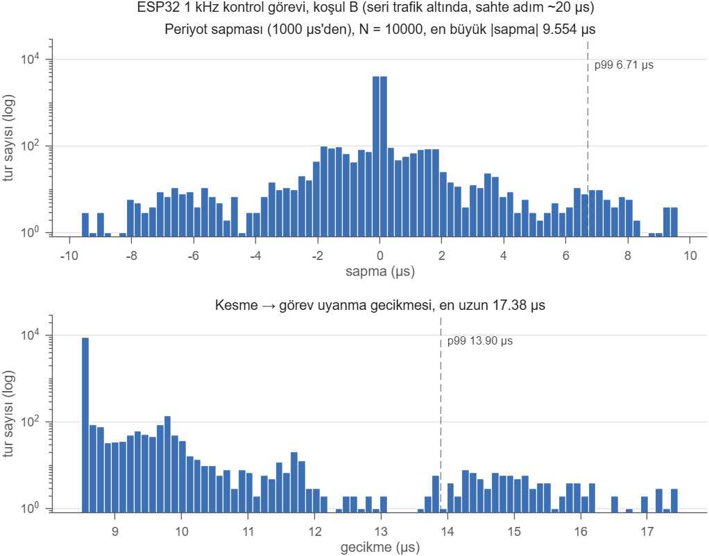
calisma_notu/framing.md iş sırası 1–5c, calisma_notu/esp32.md, simulasyon/5_planlama/, simulasyon/6_esp32/, firmware/, README.md §4–5Süreç boyunca yapılan hatalar saklanmadan bu bölümde toplandı. Bunun iki nedeni var. Birincisi, hataların çoğu sonraki bir kararı değiştirdi; yazılmazlarsa kararların gerekçesi anlaşılmaz. İkincisi, nasıl yakalandıkları yöntem hakkında bilgi veriyor. Hataların çoğu üç yolla bulundu: çapraz doğrulama (aynı sonucu iki bağımsız modelle ya da kaynakla üretmek), ilkeyle karşılaştırma (sonucun çalışmanın kendi iddiasıyla tutarlı olup olmadığına bakmak) ve yeniden kontrol (bir sonucu yazıya geçirirken baştan hesaplamak). "Ders" sütunu her hatadan çıkan kuralı yazıyor.
| # | Hata | Nasıl fark edildi | Etkisi / düzeltme | Ders |
|---|---|---|---|---|
| A1 | "90°'de kusurlar en etkili" (18 Eki) | Yeniden düşünülünce: 90°'de dişli bastırılı, kusur en az etkili | Sitenin bir kartı yanlış yönlendiriyordu; geri çekildi | Sezgiyi fiziksel mekanizmayla (ön yük) sına |
| A2 | "90°'de salınım olmaz" (koşulsuz) | Sun 2023: 90°'de yüksek kazançta 5°/9 Hz salınım | Hipotez tek eksenliydi; iki eksenli harita | Hipotezi en yakın deneysel sonuçla karşılaştır |
| A3 | Ghaffari Şekil 7/8'deki rgs tutarsızlığını okuma hatası saymak | Başlıklarda değerler açıkça yazıyordu | Makale içi tutarsızlık olarak not edildi, benzetimle gösterildi | Kaynağın hatasını kendi hatan sanma; ikisini de sına |
| A4 | Ghaffari'nin bildirmediği motor tork sınırı | Sürtünmeli uyum hatası %18–20'de takıldı | Tmax ≈ 360 N·m eklenince %3,9 | Yeniden üretimde bildirilmemiş doyumları ara |
| A5 | Kök neden parça 3: tork sınırı hücreleri "65–115°" | Yeniden kontrol | Doğrusu 30–150°, rgs 0,80–1,05 | Aralıkları tablodan oku, hafızadan değil |
| A6 | "3,5× daha hızlı / 0 kol sensörü" | Sensör kararı yazılırken ikizin kol açısını geri beslediği görüldü | Ana iddia o sonuçlar için geçersizdi; konum döngüsü motor tarafına, çerçeve değişti | Her sonucu iddianın ilkesine karşı denetle (kontrolcü neyi görüyor?) |
| A7 | 180°'ye tam ulaşılabileceği varsayımı | Üst sınır testi: yüz kusursuz bilinse bile 0,1–2,7° | Hedef kaydırma (180 ∓ 0,5°), H7 yeniden yazıldı | Zor işe girmeden önce kusursuz bilgiyle üst sınırı ölç |
| # | Hata | Nasıl fark edildi | Etkisi / düzeltme | Ders |
|---|---|---|---|---|
| B1 | Türev kol hızından: boşluksuz da ωc ≥ 20 rad/s'de kararsız | İlk benzetimler | Sönüm motor hızından; Bölüm 3.3–3.4 doğrusal analizle birebir doğruladı | Eşyerleşimsiz ölçümle hızlı döngü kurma |
| B3 | Sanal firmware kaydı 5 ms'ye seyreltilmişti | Tanılama sonuçları beklenenden kötü | Km, JM %4–13 bozuluyordu; kayıt seyreltmesiz | "1 ms kayıt" gibi iddiaları kodda doğrula |
| B4 | Simscape Hard Stop sınırları göreli açıya göreydi; başlangıçta temas kayıyordu | İlk koşuda −%42…−66 hata | O koşu geçersiz; sınırlar S.r − (x0(1) − x0(3)) | Başlangıç koşulunu her modelde ayrıca denetle |
| B5 | Km tanılamasında La terimi atılınca +%3–9 sapma | Tanılama sonucu | Üçüncü terim "zaman kayması" olarak tutuldu | Küçük sanılan terimi atmadan önce etkisini ölç |
| B6 | Mod 3'te V 10 kHz değişiyor, 1 kHz anlık kayıt yanlış | Tanılama | Firmware V'nin Ts ortalamasını kaydedecek | Kayıt hızı sinyal hızından yavaşsa ortalama al |
| B7 | Multibody'de açık ode4 enerji ekliyordu | 3B − 1B çapraz doğrulama | Çözücü değişti | Her yeni modeli eskisine karşı koştur |
| B8 | Konum hatası kol açısından hesaplanıyordu | "Kontrolcü kolu görmez" ilkesiyle karşılaştırınca | A6 ile aynı; p.Pkaynak = 'motor' | Varsayılan ayarları iddiayla birlikte gözden geçir |
| E1 | Dişli rezonansı "≈ 18,7 Hz" D düzeneğine de atfediliyordu (bu raporda bulundu) | Bölüm 3.1'de D parametreleriyle yeniden hesaplanınca | 18,7 Hz eski JGA25 parametrelerine ait; D'de 11,86 Hz (anti-rezonans 8,39 Hz) | Düzenek değişince türetilmiş sayıları da yeniden türet (D4 ile aynı ders) |
| # | Denenen | Neden olmadı | Yerine | Ders |
|---|---|---|---|---|
| C1 | Ks'yi rezonanstan ölçmek | Gerçekçi sensörle rezonans görünmüyor | Yarı statik tarama (%0,5) | Tanılamayı gerçekçi sensörle sına |
| C2 | JM'yi kol takılıyken ölçmek | %13 hata | Kol sökülü açık çevrim testi (%0,5) | Parametreyi en yalın düzenekte ölç |
| C3 | cs'yi motor kontrolcüyle tutulurken vuruşla ölçmek | Sağlam değil | Motor mili kilitli vuruş testi | Ölçülen döngüye kontrolcüyü karıştırma |
| C4 | Ghaffari DF'sini kendi düzeneğimize uygulamak | R = 0,17'de frekans 2–5 kat yanlış | Yerçekimli iki girişli DF | Yöntemin geçerlilik aralığını kendi düzeneğinde kontrol et |
| C5 | Yerçekimli DF ile kesin sınır | Kritik kazanç hatası %19'da kaldı | Kök neden sınaması; DF araç olarak kaldı | Yaklaşık yöntemin hatasını parça parça ayır |
| C6 | Hız için periyot kestirimi | Salınım sınırını bozuyor | Gözlemci (ω̂) | Kestiricinin gecikmesi döngünün parçasıdır |
| C7 | Açıya göre kazanç planlaması | 180°'yi düzeltmiyor | Motor tarafı döngü + ofset | Önce mekanizmayı bul, sonra önlemi seç |
| C8 | 180°'de edilgen akım işaretiyle yüz bulmak | Tutma torku ≈ Fc/10, işaret kör | Olay + aktif yoklama (20/42 → 42/42) | Bilgi ölçümde yoksa onu üretecek bir uyarım tasarla (3.5) |
| C9 | MATLAB serialport | Her cevap ≈ 15,6 ms gecikiyor | .NET SerialPort (≈ 1 ms) | Zamanlamayı araç zincirinin her halkasında ölç |
| C10 | Kartta double ikiz | 2,1 ms/ms, bütçe aşımı | Float + hedefe göre fark durumu | Sayısal biçimi donanımın FPU'suna göre seç |
| # | Hata | Düzeltme | Ders |
|---|---|---|---|
| D1 | TMP117 en fazla 400 kHz; aynı I²C hattındaydı | Ayrı I²C-1 hattı | Hat hızını en yavaş cihaz belirler |
| D2 | AS5600 varsayılan filtre (SF = 00) 2,2 ms gecikme | SF = 11 (0,286 ms), gecikme benzetime eklendi | Sensörün varsayılan ayarı döngü için uygun olmayabilir |
| D3 | θd tanımı belgeler arasında tutarsız | θd = θM − θL (kol tarafına indirgenmiş) | Tanımları tek yerde tut |
| D4 | ωc ve oranlar JGA25 parametreleriyle hesaplanmıştı | JGB37 için yeniden hesaplandı | Parça değişince türetilmiş sayıları tara (E1 aynı hatanın kalıntısı) |
| D5 | Hız kestirimi "kenar zamanlaması" yazıyordu | Gözlemci | Belgeyi koddaki son kararla eşitle |
| D6 | Mermaid blok şemaları GitHub'da okunmuyordu | Elle SVG | Çıktıyı okurun göreceği ortamda kontrol et |
01_envanter.md §3, git geçmişi, calisma_notu/framing.mdBoşluğun ve dişli sertliğinin çevrim içi tanılanması (Giovannitti 2022, Li 2026 kısmen yapmış). Bu çalışmada bir kez ölçülüp tabloya yazılıyor. Kapsam dışı bırakılmasının gerekçesi, çalışmanın amacının EEM alanında bir kontrol ve kestirim algoritması olması.
calisma_notu/malzeme.md).Ertelenmiş işler (adlarıyla): uyarlamalı yoklama (itişi ölçülen sürtünmeye göre ölçeklemek), OpenSCAD mekanik tasarım, ESP32 adım 7.
| Risk | Belirti | B planı |
|---|---|---|
| Kayan sürtünme + model hatası üst üste biner | D7'de yanlış yüz ya da B13 ihlali | Yoklama itişini son ölçülen sürtünmeye göre ölçeklemek; deneyler arasında kısa D1 tekrarı |
| Gerçek dişlide r ya da Ks zamanla değişir | Ofset hatası büyür | Kapsam dışı bırakılan çevrim içi tanılama yeniden açılır |
| Yüz kestirici yalnız motor sinyalleriyle tutmaz | D7'de 42/42'nin altında | Kol sensörlü geri besleme + kazanç planlaması (arşivdeki ilk 5 Kasım çerçevesi) |
| Mod 1'de zıt EMK kırılganlığı | 179/181°'de yanlış yüz | D7 mod 2'de (ω̂ ile zıt EMK kompanzasyonu) tekrarlanır |
README.md §7, calisma_notu/framing.md §7–8, calisma_notu/deney_protokolu.mdTam kaynak listesi, her makale için "ne yapmış, bizden farkı ne" notlarıyla: literatur/okuma_notlari.md. Tarama kayıtları: literatur/ieee/, literatur/ieee_disi/, literatur/wos/, literatur/kontrol_taramasi/.
Dişlisiz tek eklemli kol. Mekanik denklem J θ̈ = K i − b θ̇ − mgℓ sin θ, elektrik denklemi L di/dt = V − R i − K θ̇ (Kt = Ke = K). J'ye ve L'ye bölünüp durum x = [θ, ω, i] ile yazılınca:
| Parametre | Anlamı | Değer | Kaynak |
|---|---|---|---|
| Jm | rotor eylemsizliği | 0,01 kg·m² | CTMS |
| b | viskoz sürtünme | 0,1 N·m·s | CTMS |
| K | motor sabiti | 0,01 N·m/A | CTMS |
| R, L | sargı direnci, endüktansı | 1 Ω, 0,5 H | CTMS |
| m, ℓ | uç kütlesi, kol boyu | 0,05 kg, 0,1 m | tasarım (motor 90°'de kolu 4,9 A, 4,9 V ile tutabilir) |
| J | Jm + mℓ² | 0,0105 kg·m² | hesap |
Denge. θ0'da i0 = mgℓ sin θ0/K, u0 = R i0; 90°'de i0 = 4,91 A, u0 = 4,91 V. 90°'de doğrusallaştırılmış A, B, C Bölüm 3.1'de; üç açıdaki özdeğerler Bölüm 3.2'de. Açık çevrim benzetimi (u = u0 = 4,905 V sabit, θ(0) = 80°, 90°, 100°, 60 s): 90°'den bırakılan kol kıpırdamıyor; 80°'den bırakılan çok yavaş 90°'ye yaklaşıyor (60 s'de 87,2°); 100°'den bırakılan uzaklaşıp tepeden geçiyor ve tam bir tur atıp 90°'ye (450°) geri geliyor. Sabit tork yerçekimine tam 90°'de eşit olduğu için 90° masanın kenarındaki bir bilye gibi nötr; kolu tutmak için geri besleme gerekiyor.
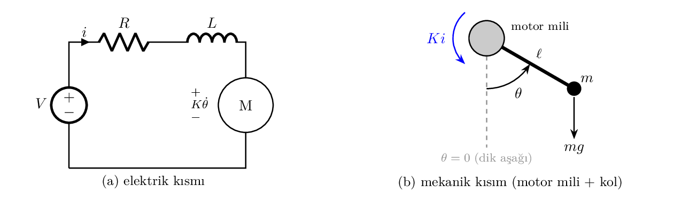
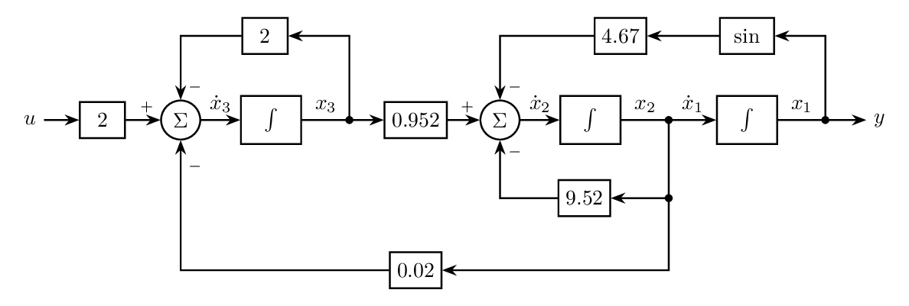
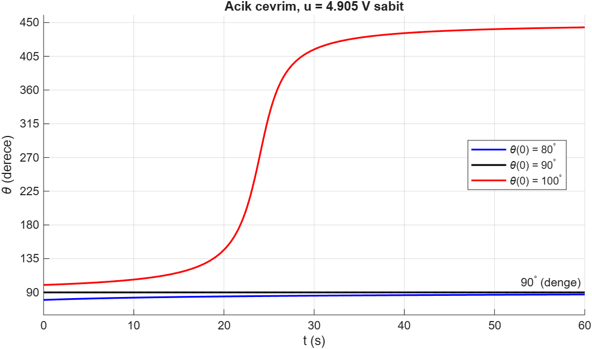
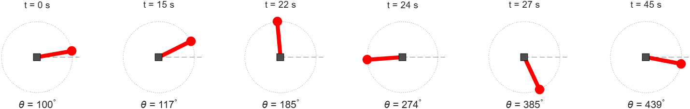
matlab/acik_cevrim.m, animasyon.m, filmseridi.m, README.md Ek B, ozel/ders_raporu/kt1.texBetik rapor/son_rapor/bolum3_dogrusal.m, depo kökünden cd rapor/son_rapor; bolum3_dogrusal ile çalışır (MATLAB R2026b, Control System Toolbox; Symbolic Toolbox gerekmez). Logu ve beş şekli yeniden yazar. Şekil 5.1, 5.2 ve 6.2 sekil_5_6.py ile mevcut loglardan çizilir (benzetim yeniden koşturulmaz). Üç dosya bu PDF'e de gömülüdür.
| Model | Ne içeriyor | Doğrulama |
|---|---|---|
kol_benzetim.m | İki kütle + boşluk + yerçekimi + Stribeck; P–PI; sensör katmanı (nicemleme, gecikme, gürültü); ofset, yüz kestirici, elektrik modeli seçenekleri; vektörize RK4 | Taban |
kol_model.slx (Simulink) | Tesis, sensör ve kontrolcü ayrı bloklar, ode4 1e-4 s | Betikle bit düzeyinde aynı |
sm_kol_model.slx (Simscape) | Mekanik ağ: Inertia, Rotational Damper, Hard Stop (dişli teması), yük bloğu | Rejim sınıfı 10/10, genlik ≤ %0,3 |
sm_motor_model.slx | + Simscape Electrical DC motor, sürücü (mod 1–3), DRV8874 doyumu, INA228/IPROPI ölçümü | 36 hücrede 30 ölçütü sağladı; kalanlar doyumdaki düzensiz hücre |
mb_kol_model.slx (Multibody) | 3B mekanizma + 1B dişli ağı, Mechanics Explorer | 1B modele karşı (çözücü düzeltmesiyle, B7) |
| Parametre | Deney | Yöntem | İkizde hata |
|---|---|---|---|
| Km, Ra | D1 | Gerilim sinüsü, en küçük kareler (La terimi zaman kayması olarak) | Km %0,05 (kol takılıyken %0,3) |
| JM, bM, Fc | D1 | Kol sökülü açık çevrim, pencere ortalamaları | %0,5, %1,4, %1 |
| Fs | D2 | Yavaş tork sinüsü, kopma anı | %1–2,5 |
| Ks, mgℓ, AS5600 sıfırı | D3 | Yarı statik kol taraması, sapma–tork eğimi | %0,5–1, %0,1, 0,05° |
| r | D4 | Kol asılı, iki yüz kümesi | %0,2 |
| cs, JL | D5 | Motor kilitli vuruş, sönümlü sinüs uydurması | %3,5, %0,5 |
Tanılanan değerlerle kurulan ikiz, kritik rgs'yi gerçek tesisten en çok bir tarama adımı (0,05) farklı öngördü. Ayrıntılar adım 4 raporunun 9–10. bölümleri ve Ek A–B'sinde.
Ortak ayarlar: 1 kHz döngü ve seyreltmesiz kayıt (t, θL, φ, Hall sayımı, ω̂, u, V, i), hız gözlemciden, P–PI, sürücü mod 1 (gerilim). Sıra bağımlılığa göre: her deney öncekilerin sonucunu kullanır.
| # | Düzenek | Ne yapılır | Süre × tekrar | Çıkan |
|---|---|---|---|---|
| D0 | Kalibrasyon | Enkoder yönü, AS5600 tur sayımı ve doğrusallık tablosu, SF = 11, akım sıfırı, döngü zamanlaması, akım sınırı | — | Sensör ölçekleri |
| D1 | Kol sökülü | Mod 1, açık çevrim, gerilim sinüsü 0,25 Hz (≈ 9,8 V genlik) | 9 s × 3 | Km, Ra, JM, bM, Fc |
| D2 | Kol sökülü | Tork sinüsü 0,1 N·m eşdeğeri, 0,02 Hz | 36 s × 3 | Fs |
| D3 | Kol takılı | P–PI rgs 0,8, referans 90° ± 70°, 0,05 Hz | 21 s × 5 | Ks, mgℓ, AS5600 sıfırı |
| D4 | Kol takılı | Kol 0°'da asılı, rgs 0,5, referans 0° ± 60°, 0,05 Hz | 21 s × 5 | r |
| D5 | Motor dişlisi kilitli | Kol 90°'de, motor pimle sabit; kola hafif vuruş, 0,6 s kayıt | 10 vuruş | cs, JL |
| D6 | Kol takılı | Açı × rgs taraması, her noktada 3 başlangıç sapması (0,2 / 1 / 5°) | — | Kritik rgs(θ0) |
| D7 | Kol takılı, 179–181° | Yüz kestirici: 42 senaryo × 3 tekrar + edilgen karşılaştırma; mod 1, gerekirse mod 2 | — | H7, B12, B13 |
Tanılama toplamı (D1–D5) kurulum hariç ≈ 30 dakika kayıt. Her deneyin geçerlilik ölçütü (ör. D3'te dişli tarama boyunca hep aynı yüze yaslı olmalı; D4'te iki yüz iki ayrı kümede durmalı) ve D7'nin tam metni calisma_notu/deney_protokolu.md'de.
| Tarih | Evre | Ne yapıldı |
|---|---|---|
| 11–13 Eki | KT1 | 3 durumlu model, CTMS parametreleri, 90° doğrusallaştırma, ode45 açık çevrim, animasyon |
| 17–18 Eki | Araştırma başlangıcı | Konu seçimi, IEEE ve IEEE dışı tarama, 1. düzeltme turu (A1, A2) |
| 22 Eki | Tarama + malzeme | Web of Science, üç seviye malzeme listesi |
| 24 Eki | İlk çerçeve | Danışman kaynakları, son tarama, çalışma notu, 2. düzeltme turu (D1–D4) |
| 30 Eki | Adım 4a–4b | Ghaffari yeniden üretimi, rejim sınıflandırıcı, düzenek seçimi (D), yerçekimli DF |
| 31 Eki | Kök neden + ikiz | DF/benzetim uyuşmazlığı, Simulink ve Simscape modelleri |
| 1–2 Kas | Sanal tanılama | 11 parametre ikizde, D0–D6 |
| 3 Kas | Adım 4 raporu | 49 sayfalık PDF, Multibody 3B modeli |
| 5 Kas | Dönüm noktası | Analizden tasarıma; motor tarafı döngü, ofset tablosu, 180° açık nokta, literatür kontrolü |
| 6 Kas | Yüz kestirici | Belirsiz bant, üst sınır, kestirici, AS5600 motor milinde, duyarlılık, INA228; ESP32 adım 1–4 |
| 7 Kas | ESP32 5–6 | PIL 84/84, kart içi gerçek zamanlı ikiz |
| 8 Kas | 5b, 5c, D7 | Kayan sürtünme, birleşik hatalar, gerilim sürüşü, 180° deney protokolü |
| 10–18 Kas | Sunum | Ana sayfa, sunum_demo, README, sunum_esp32 |
| 20 Kas | Birleşik rapor | Hata envanteri, Bölüm 3 hesapları, bu rapor |
| Bölüm | Kod | Kayıt / sonuç |
|---|---|---|
| 2, model | simulasyon/kol_benzetim.m, parametreler.m, 4a_ghaffari/secenek_duzenek.m | — |
| 3, doğrusal analiz | rapor/son_rapor/bolum3_dogrusal.m | bolum3_dogrusal_log.txt, img/b3_*.png |
| 4, ilk çerçeve | simulasyon/, 4a_ghaffari/, simulink/ | rapor/adim4_simulasyon_ve_dogrulama.pdf |
| 5, dönüş | 5_planlama/konum_kaynagi_karsilastir.m, ofset_tablosu.m, inceleme_180*.m, olu_bant_180.m | *_log.txt; rapor/son_rapor/img/b5_*.png |
| 6.2 | 5_planlama/belirsiz_bant.m, ust_sinir.m | *_log.txt, *.mat; img/b6_belirsiz_bant.png |
| 6.3–6.4 | 5_planlama/yuz_kestirici.m, yuz_kestirici_as5600.m, hiz_gozlemci.m, sunum_demo.m | *_log.txt |
| 6.5 | 5_planlama/duyarlilik.m, akim_gurultu.m, kayan_surtunme.m, mod1_kestirici.m | *_log.txt |
| 6.6 | firmware/src/, simulasyon/6_esp32/ | ktl_esdeger_log.txt, pil_log.txt, ikiz_dogrula_log.txt, dongu_olcum_log.txt |
| 7 | — | rapor/son_rapor/01_envanter.md |
| Ek D | — | calisma_notu/deney_protokolu.md |